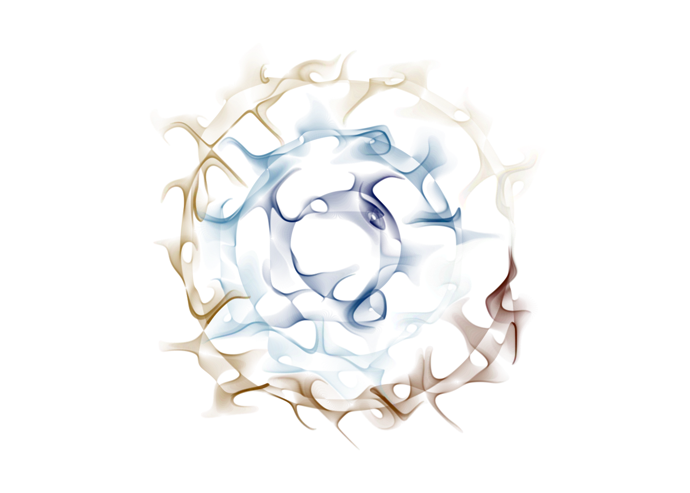
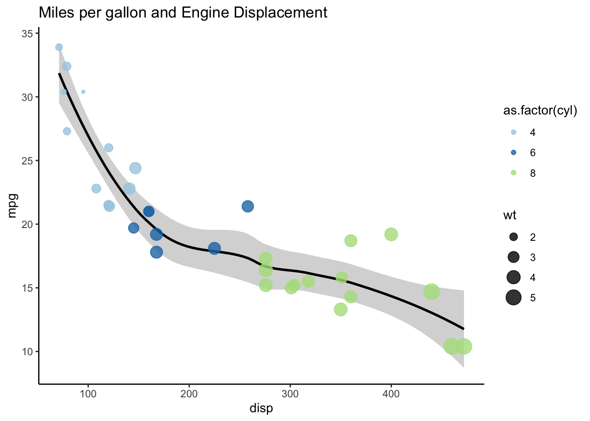
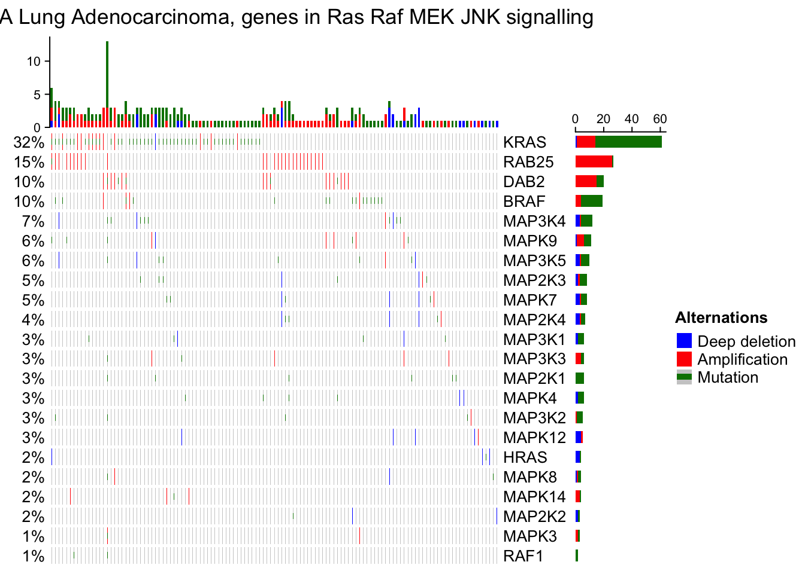
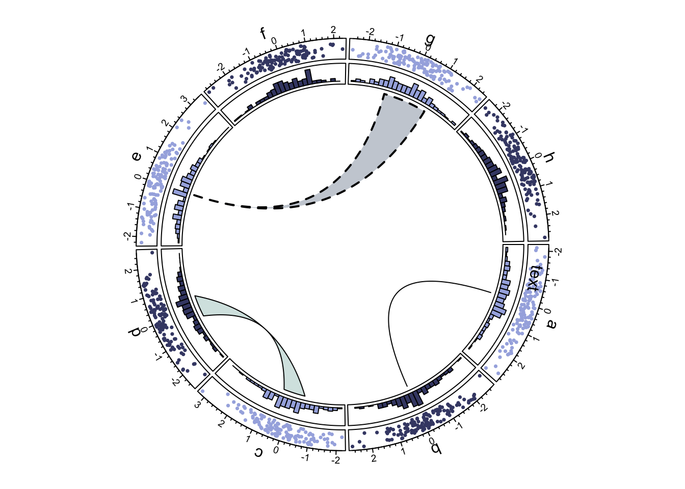

Bioconductor was initially created with the idea in mind to generate an open-source place based on the R programming language on which to store packages and projects for the analysis of genomics data. Given the nature of Bioconductor, it encourages contributions and learning through massive documentation bundled with every package. Bioconductor packages are focused on deploying many different functionalities spanning from data visualization for genomics to differential expression analysis, all of this coupled with the added learning bonuses coming from the release of vignettes (accessible with the function vignette()).
Genome arithmetics
Some of the most used packages in Bioconductor used for genome arithmetics include IRanges and GenomicRanges. Since the genome is a linear one-dimensional coordinate system, we can perform different kinds of operations related for instance to overlaps or differences. For example in the former package, we can define a set of three ranges by using the following code:
# Lengths (note how we use 0-indexed bases)width(myiranges)
[1] 6 11 16
Checking the class of these objects we would see that they are S4, like all Bioconductor objects. This means that the operations performed above are already stored in slots of the object accessible with the @ operator.
myiranges@start
[1] 5 20 25
IRanges objects can also be represented visually with the following code function.
# Define function to draw IRangesillustrate_iranges <-function(obj) {for(i inseq_along(obj))cat(rep(" ", start(obj)[i]),rep("=", width(obj)[i]),"\n", sep="")}illustrate_iranges( myiranges )
======
===========
================
An advancement based on the IRanges package is provided by the GRanges one, which provides basically the same interface with more integration with other Bioconductor packages.
Most of the provided operations above are recalling ones already existant in C-based packages like bedtools.
DNAString and DNAStringSet
Another way of visualizing genomics elements is through strings, after all DNA sequences are just sets of letters. A useful suite of commands is the one provided by the package Biostrings.
library(Biostrings)# Define a sequencemyseq <-DNAString("atggaaaccgcgctgctgatttgcgcgtaa")myseq
This for instance is useful since in FASTA format files, the genes are always present with their forward strand and therefore we might need the reverse complement if the gene is antisense. This capability is achieved with the DNAString class and its associated methods. We can, for instance, translate a DNA sequence as well.
translate(myseq)
10-letter AAString object
seq: METALLICA*
We are also able to exploit functions to check for the existance of patterns within our sequences.
# Match basic patternmatchPattern("ATG", myseq)
Views on a 30-letter DNAString subject
subject: ATGGAAACCGCGCTGCTGATTTGCGCGTAA
views:
start end width
[1] 1 3 3 [ATG]
The fuctionality provided by the DNAString package is expanded and vectorized across multiple sequences thanks to the DNAStringSet which allows us to collect and operate over multiple DNA sequences at once.
Bioconductor already contains many packages which gather genetic information for many model organisms, one of them is BSgenome while others live within the .org family of packages.
Genomics data visualization
Plotting basics in R
One of the main uses for data visualization is to perform exploratory data analysis (EDA). The basic library in R for creating customisable and clear visualization is ggplot. This package is inserted within a rich environment of data manipulation tools and visualization called tidyverse. The fundamental idea related to data visualization is to communicate a story using the data at our disposal. Relationships hidden in data stand out with proper visualization techniques and ideas. That’s the thing, it’s not only about dull application but also about creativity and storytelling. This phenomenon is especially relevant while working with huge datasets where relationships can exist in many directions and between many variables at once, and where each variable might be represented by thousands or millions of observations. This is exactly the case for genomic data sets describing relevant biological information. Other times, like below, the plotting functionality of R can be adapted to create generative art.
Show code
# Generative art with R example with folded code?library(dplyr)library(jasmines)# randomizeuse_seed(runif(1)) %>%scene_discs(rings =3, points =5000, size =5 ) %>%mutate(ind =1:n()) %>%unfold_warp(iterations =1,scale = .5, output ="layer" ) %>%unfold_tempest(iterations =20,scale = .01 ) %>%style_ribbon(palette =palette_named("vik"),colour ="ind",alpha =c(.1,.1),background ="white" )

In its basic functionality, ggplot exploits what is known as “the grammar of graphics”, gg. This consists of a layered mechanism of instructions. We start by defining which variables of interest are to map to which plot characteristic between color, fill, shape and size. This happens by using the aes() function within either a direct ggplot call or within geoms. geoms are used to define what kind of plot to use, and this of course is going to depend on which variable relationships we want to highlight. One of the paradigms of plotting data is the variable-chart type relationship. By this we mean the right coupling between chart type and appropriate variable nature to plot (i.e. continous vs discrete).
These are the main relationships to take into account when plotting:
One variable, continous: histogram, density curve (distributions)
One variable, discrete: bar chart, pie chart (proportions) Two variables, continuous: scatter plot, 2D density kernels (distributions)
Two variables, discrete: confusion matrices, heatmaps (common occurence)
Two variables, one continuous and one categorical: box plot, violin plot (distributions)
This, in practice, for a minimal plot between two continuous variables:
library(ggplot2)library(RColorBrewer)data <- mtcars# Plot the relationship between a car displacement and mpg, colored by number of cylinders and give a dot size related to the car's weight# From this it appears clear how heavier cars have bigger engines, consume more and have more cylinders.ggplot(data, aes(x = disp, y = mpg, col =as.factor(cyl))) +geom_smooth(color='black') +geom_point(aes(size = wt), alpha=0.8) +scale_color_brewer(palette ='Paired') +ggtitle('Miles per gallon and Engine Displacement') +theme_classic()

Obviously there exist many extensions which add functionality to the basic package. For example we can plot maps with map_data (or leaflet widgets) or alluvial diagrams (a subset of Sankey diagrams) with ggalluvial. Another useful package when studying clonal evolution (in tumors particularly) is fishplot, which creates publication-ready plots.
Plotting heatmaps
Heatmaps are visual representations of tabular data. One of the most used packages to create heatmaps is pheatmap and its more personalizable counterpart complexHeatmap.
This package allows the user to define heatmap elements as separate classes within a list.
Set operations, particularly useful when dealing with interval genomic data, can be depicted with the use of Venn diagrams, but what it we need more complex operations spanning more than four sets? (the Venn of which can already be quite confusing)
In this use case we can check out the package UpSetR which will produce plots line the one below. In this case we can see how it is useful in exploring multiple set relationships all at once. UpSet plots can also be thought of as extensions of heatmaps, by coloring sets by intersection size and annotations.
oncoPrint
oncoPrint() is a function within the ComplexHeatmap package that became very famous in CNV studies in cancer, these plot are dedicated to checking out gene alterations as matrices where samples are columns and genes are rows.
Show code
# Source from ComplexHeatmap package a heatmap with CNV modificationsmat =read.table(system.file("extdata", package ="ComplexHeatmap", "tcga_lung_adenocarcinoma_provisional_ras_raf_mek_jnk_signalling.txt"), header =TRUE, stringsAsFactors =FALSE, sep ="\t")mat[is.na(mat)] =""rownames(mat) = mat[, 1]mat = mat[, -1]mat= mat[, -ncol(mat)]mat =t(as.matrix(mat))# Define graphicscol =c("HOMDEL"="blue", "AMP"="red", "MUT"="#008000")alter_fun =list(background =function(x, y, w, h) {grid.rect(x, y, w-unit(2, "pt"), h-unit(2, "pt"), gp =gpar(fill ="#CCCCCC", col =NA)) },# big blueHOMDEL =function(x, y, w, h) {grid.rect(x, y, w-unit(2, "pt"), h-unit(2, "pt"), gp =gpar(fill = col["HOMDEL"], col =NA)) },# big redAMP =function(x, y, w, h) {grid.rect(x, y, w-unit(2, "pt"), h-unit(2, "pt"), gp =gpar(fill = col["AMP"], col =NA)) },# small greenMUT =function(x, y, w, h) {grid.rect(x, y, w-unit(2, "pt"), h*0.33, gp =gpar(fill = col["MUT"], col =NA)) })# Simplify rectangles with alter_graphics()# Just for demonstrationalter_fun =list(background =alter_graphic("rect", fill ="#CCCCCC"), HOMDEL =alter_graphic("rect", fill = col["HOMDEL"]),AMP =alter_graphic("rect", fill = col["AMP"]),MUT =alter_graphic("rect", height =0.33, fill = col["MUT"]))column_title ="TCGA Lung Adenocarcinoma, genes in Ras Raf MEK JNK signalling"heatmap_legend_param =list(title ="Alternations", at =c("HOMDEL", "AMP", "MUT"), labels =c("Deep deletion", "Amplification", "Mutation"))# Draw oncoPrintoncoPrint(mat,alter_fun = alter_fun, col = col, remove_empty_columns =TRUE, remove_empty_rows =TRUE,column_title = column_title, heatmap_legend_param = heatmap_legend_param)

cBioPortal for Cancer Genomics
This is a website hosted by MSKCC where cancer cases can be collected in repositories which can be queried as normal SQL databases to extract relevant metadata and genomic data coming from a great amount of studies. These sources can be accessed via the web and can be downloaded to re-create plots.
Genome-level Heatmaps
Here we are producing genome-level heatmaps divided by chromosome and/or genes. These can be further decorated and transformed into visually pleasing plots by using additional libraries like circlize, which is the R implementation of Circos plots.
Show code
library(circlize)# Initializeset.seed(123)n =1000df =data.frame(factors =sample(letters[1:8], n, replace =TRUE) # Categories , x =rnorm(n) # Vector , y =runif(n) # Vector )circos.par("track.height"=0.1)circos.par("points.overflow.warning"=FALSE)circos.initialize(factors = df$factors, x = df$x)# Add a trackcircos.track(factors = df$factors , y = df$y,panel.fun =function(x, y) {circos.text(CELL_META$xcenter, CELL_META$cell.ylim[2] +uy(5, "mm"), CELL_META$sector.index)# Adding Axescircos.axis(labels.cex =0.6) })col =rep(c("#A6B1E1", "#424874"), 4)# Adding pointscircos.trackPoints(df$factors, df$x, df$y, col = col, pch =16, cex =0.5)# add sector name outsidecircos.text(-1, 0.5, "text", sector.index ="a", track.index =1)# Add an histogrambgcol =rep(c("#A6B1E1", "#424874"), 4)circos.trackHist(df$factors, df$x, bin.size =0.2, bg.col ='white', col = bgcol)# Add linkscircos.link("a", 0, "b", 0, h =0.4)circos.link("c", c(-0.5, 0.5), "d", c(-0.5,0.5), col ="#D6E5E3", border ="black", h =0.2)circos.link("e", 0, "g", c(-1,1), col ="#CACFD6", border ="black", lwd =2, lty =2)

Then once drawn, we can clear the canvas.
# Clear circos environmentcircos.clear()
Interestingly, we can initialize a circos plot in R already containing genomic coordinates in the form of chromosome ideograms.